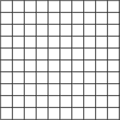
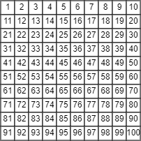
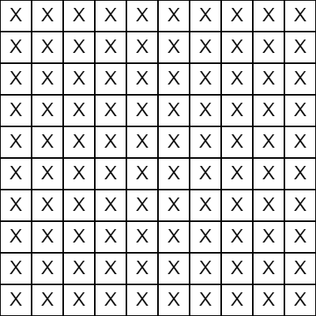
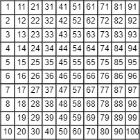
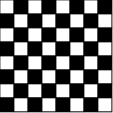
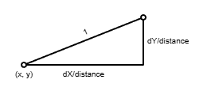

Open the My First Grid workspace in CodeHS
Lets say that you want to draw a line of squares:
If each square is 20 wide, we could write it as:
square(0,0,20); square(20,0,20); square(40,0,20); square(60,0,20); square(80,0,20); square(100,0,20); square(120,0,20); square(140,0,20); square(160,0,20); square(180,0,20);
By this is a little much. I can see that the x value is a series of numbers that starts at 0 and increases by 20 for each square. We could make a for loop that will generate the x value for each square.
for(let x = 0; x < 200; x+=20){
square(x,0,20);
}
This is much classier.

If we're looking to make a grid of squares, one attempt would be to draw ten squares each time the new x value is generated:
for(let x = 0; x < 200; x+=20){
square(x,0,20);
square(x,20,20);
square(x,40,20);
square(x,60,20);
square(x,80,20);
square(x,100,20);
square(x,120,20);
square(x,140,20);
square(x,160,20);
square(x,180,20);
}
In order to draw ten squares for every x value, we've done some more gross copy-pasting. If you look carefully, the y coordinates also have a pattern. This means that we can write a loop inside of our x loop that should loop through every y value that we need to draw a square at. It's the same pattern
for (let x = 0; x < 200; x += 20) {
for (let y = 0; y < 200; y += 20) {
square(x, y, 20);
}
}
This is nesting loops. Each new value of x will spawn a new loop that will cycle the y variable from 0 to 200. After that, the x variable increases and the y value starts at zero again. This will generate every combination of x and y that is needed to draw the full grid on the screen.

Starting with the nested loop above that will generate the (x,y) pairs for each rectangle being drawn. Your job will be to use the text() command at each of those locations as well.
You can put text in the center of each square using the text() function:
textAlign(CENTER,CENTER); text( "X" , x + 10, y + 10); //add 10 to x and y to get to the center of a 20x20
This would put an X in the center of each square.

To get the numbers to show you will need a counting variable to help you, but don't make it global. Declare it and initialize it to 1 inside the draw function, right before the loop begins. During the loop, after drawing the square, use text() to draw the value of the counting variable, and then immediately increase it by 1. This will cause each square to be one value higher than the previous one. This should feel similar to the 'Better Number List' sketch from before.
IF you use the nested loop that you've been provided, you may notice something strange about the order that the numbers go in. Notice that the first ten numbers are in the far left column, when we actually want them on the top row.

This is because the loop is set up in a way that the x value holds at zero while the y variable cycles through all its values. This ends up generating the left column first and generating in column-major order
for (let x = 0; x < 200; x += 20) { //Hold x steady while y loops, then increases x and repeats
for (let y = 0; y < 200; y += 20) {
textAlign(CENTER,CENTER);
}
}
In order to get the squares to generate on the top of the screen, we can change the loop so that the y variable is the outer loop:
for (let y = 0; y < 200; y += 20) { //Hold y steady while x loops, then increases y and repeats
for (let x = 0; x < 200; x += 20) {
textAlign(CENTER,CENTER);
}
}
This should cause the numbers to generate in row-major order

Open the Checkerboard workspace. The basics of this are very similar to the previous one. A nested loop is used to generate all the locations of the squares.
To get the checkerboard effect we need to make sure that we alternate between drawing black and white squares. One way to do that is to bring back the counting variable from the previous sketch and use the fact that odd and even numbers alternate. When you get to each square, use mod to help you determine if the count is even or not. Choose a black fill for squares with an even count, white If odd.
This strategy does have a flaw because the colors of the checkerboard don't perfectly alternate. The color of the square at the end of each row is the same as the one at the beginning of the next. You can offset this by putting an extra count++ as the last line of your outer loop. This will nudge the count from odd to even and disrupt the alternating, causing the next row to start with a square of the same color.
In the sketch above, a grid of circles is drawn, and each circle's radius is oscillating from large to very small. The key to their animation is a value that is generated for each circle using this call to the sine function (assuming angleMode(DEGREES) )
let s = sin(frameCount*0.5 + x + y);
Including frameCount in a sin() function will create a value that is different each time, oscillating between -1 and +1. The x and y are added so that not all circles are using the exact same value (frameCount). Adding the location to the frameCount offsets the angle that is used to calculate the sin value.
Your task is to make the Circle Waves workspace behave similarly to the one above. After calculating the sin value for each location, you can use the map() function to get it out of the -1 to +1 range and into the range of radii that you are looking for.
Note: Don't forget to use angleMode(DEGREES)
Open the Hover Circle Grid workspace. The purpose of this sketch will be to have a grid of circles that change color when the mouse is hovering over them. Remember that the way we check to see if the mouse is in a circle is to first calculate the distance from the mouse to the center of the circle, and then compare it to the radius of that circle.
Use a nested loop to help you generate your xy-values and draw your grid of circles with the radius of your choosing (Remember to use ellipseMode(RADIUS) to simplify things.). Before you draw the circle at each (x, y) value, you need to pick the fill. You should calculate the distance to the mouse using dist(), and use that to help you pick between one of two fill colors for each circle to be.
You have done something similar to this before. If you need inspiration, go back and look at the Circle's and dist() assignment from the first p5 unit.
Open the Swelling Circles workspace.
To make this sketch interactive, each circle drawn is responding to how far the mouse is from it. The relationship is inverse; the smaller the mouse distance is, the bigger the radius is.
When drawing each circle you should first calculate the distance to the mouse, and then calculate the circle's radius using a fraction with the distance on the bottom ( the example uses 250/mouseDistance ).
Dividing by the distance will work for most of the circles, but you'll notice that when the distance gets small enough you can get a radius value that is way too large. Do your best to limit how big this value can be. If the radius is larger than your maximum radius, use the maximum radius instead.
As you wave your mouse around the sketch above, you'll see that we have a grid lines that are all the same size and pointing at the mouse. Open the Pointing at the Mouse workspace, where you will recreate it.
To get started, use a nested for-loop to generate a grid of (x, y) locations. At each location, use the line function to connect the mouse: (mouseX, mouseY) to the point made by your looping variables: (x,y)
Make this connection and run your sketch. Since these lines are connecting all the way to the mouse your sketch will be a little chaotic, but you should see a line connecting the mouse to every location in the grid.
The line() command that I gave you above simply connects the two points. If we want to draw a shorter line, but maintain the direction that it's pointing, we'll need to think of this as a vector, meaning we want to focus more on the line that we're drawing as a triangle formed between (mouseX, mouseY) and the point (x, y)

The sides of the triangle are dx and dy, are the individual difference in X and the difference in Y which can be calculated using subtraction of the two endpoints. Rewrite your loop so that it first finds these differences before drawing the line. If you assign them to variables named dX and dY, the line statement should look like this.
line( x, y, x + dX, y + dY);
After all of this work, you should still see lines that connect all the way to the mouse
The ratio of the dX and dY is what determines the direction that the line is pointing. We can change the length of the line by multiplying or dividing dX and dY, as long as it's by the same value.
Our goal is to draw lines that always have a length of 15. To do this we need to calculate a new dX and dY that have the same ratio, but are modified to make the line drawn with them is 15.
The key to this to first calculate the distance from the xy location to the mouse's location: dist(x,y,mouseX,mouseY)
This distance is the 'hypotenuse' of the triangle formed with our dX and dY. We don't know exactly what this distance will be , but if you divide both dX and dY by that distance, you keep the same ratio between the two, but create a triangle with a hypotenuse that is guaranteed to be 1.

With our new dX and dY giving us a hypotenuse of 1, we can then use multiplication to get the exact hypotenuse that we want. In this case we will be multiplying by 15. Modify your loop so that it:
With these changes to the dX and dY values, the line drawn using them should now have a length of exactly 15. Run the program again to confirm that it works properly.